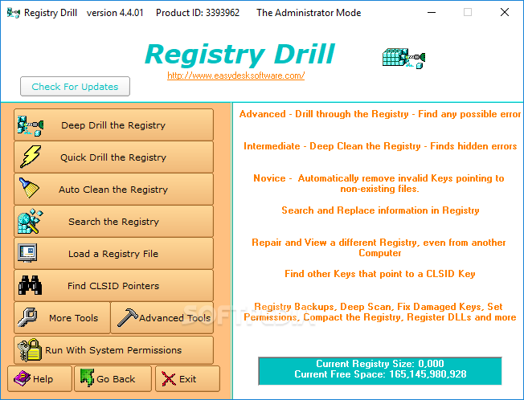

Refresh Windows Registry
Эта утилита предназначена для работы с системным реестром. В состав Registry Drill входит большой набор инструментов, которые помогают находить и устранять ошибки, возникающие в реестре в процессе работы системы. К ним относятся поврежденные или ненужные ключи, файлы, которые не загружаются, и пр. Программа может выполнять сканирование реестра, после чего выводит список ошибок с указанием того, почему ключ содержит ошибку и как ее исправить. Кроме этого, утилита имеет мощные средства поиска в реестре.
